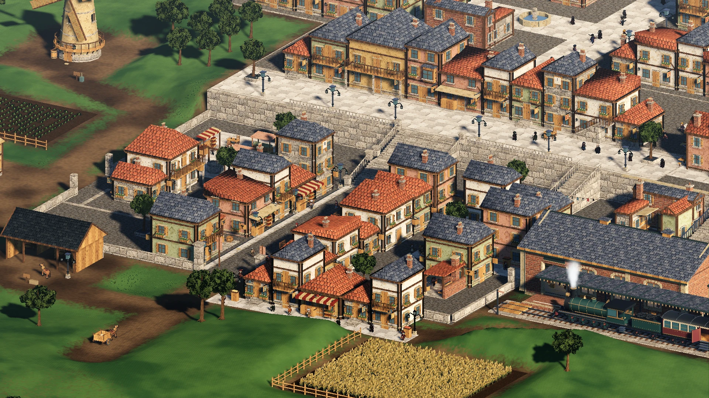
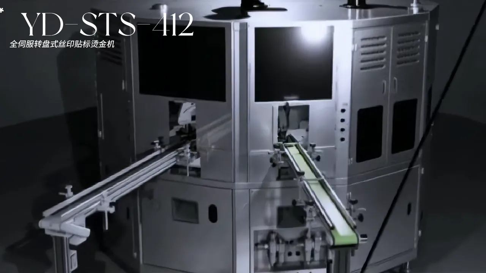

FORM STUDY / 概念示意 · 非定稿
方案设计阶段
Mono-01观察单元
一个个人非商业硬件项目。尝试让语音、视觉与两轴云台协同，把“观察与回应”带到真实空间。
当前围绕外观、结构和软硬件分工进行方案探索；语音、视觉与电脑协作能力是后续验证目标。
SHOWREEL / SELECTED WORK · 作品档案
从像素小镇的街巷与灯火，到产线上的数字孪生，再到会转头的观察单元。这里记录我在交互、三维与硬件之间的工作。

WUXI TOWNIN-GAME CAPTURE / 01一座关于灯火、秘密与有限信任的小镇。走进独立游戏官网，探索世界、角色与玩法，体验 v0.4.1 完整单人 Demo：城镇探索、室内调查与昼夜生存。
进入游戏官网↗
FIG. 00 / REAL MACHINE YD-STS-412全伺服转盘式丝印贴标烫金机 · 真机影像Yaodong Machinery · Digital Twin
为尧东机械的 YD-STS-412 转盘机做一套展示系统：把展会上的大型设备搬进虚拟空间，参观者不必到场，即可在虚拟厂房里完成 360° 全景拆解、核心结构透视与全流程工况模拟，并切换不同包材看到印刷效果。
我在这个跨年级小组里负责镜头切换系统——四个机位的参数配置、切换蓝图逻辑、过渡参数调试，以及提供给其他交互模块调用的触发接口。
| 项目类型 | VR 项目实践 · 跨年级课题 |
|---|---|
| 合作企业 | 尧东机械 · YD-STS-412 全伺服转盘机 |
| 设备对象 | YD-STS 全伺服传动系统 / SPA 系列整线 · 丝印 贴标 烫金 |
| 展示能力 | 全景拆解 · 结构透视 · 工况模拟 · 包材对比 |
| 机组配置 | C01 总览 / C02 结构 / C03 工况跟随 / C04 包材特写 |
| 包材切换 | 圆瓶 · 椭圆瓶 · 异型瓶 |
| 当前阶段 | 核心交互开发 |

Next Stop: Balance
一套围绕资源与取舍的卡牌系统。玩家在有限的行动里安排路线，靠手中卡牌改变站与站之间的平衡；规则框架之外，也做了卡面质感与烫金工艺的表现实验。
| 类型 | 卡牌 · 策略 |
|---|---|
| 我负责 | 卡牌系统规则与数值结构 · 方案呈现 |
| 交付物 | 项目方案 · 卡牌系统详细设计 · 视觉样张 |
| 表现实验 | Blender 烫金 / 闪卡质感研究 |
一个个人非商业硬件项目。尝试让语音、视觉与两轴云台协同，把“观察与回应”带到真实空间。
当前围绕外观、结构和软硬件分工进行方案探索；语音、视觉与电脑协作能力是后续验证目标。